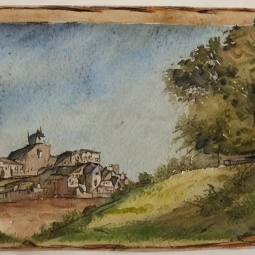

Epoca Medievale

- Il Medioevo Europeo
- Il feudalesimo.
- Le Crociate.
- La nascita delle università.
- Il Califfato di Cordova
- La convivenza tra musulmani, cristiani ed ebrei.
- L'era d'oro della cultura e della scienza.
- Le architetture moresche.
- Giappone Feudale
- I samurai e i daimyo.
- Il codice bushido.
- Il periodo Sengoku.
Capitolo Principale